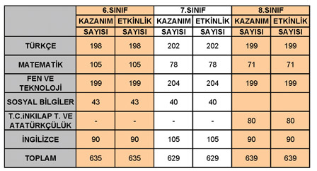
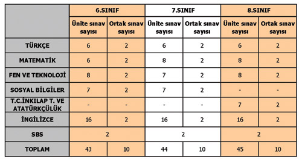

İletişim
DataOfis Hakkında detaylı bilgi için bize ulaşın...Okul Sınavları
OKS Niçin Kaldırıldı?
OKS sistemi; İlköğretim düzeyindeki eğitim ve öğretim sürecini olumsuz yönde etkilemekteydi. Adı üzerinde ilköğretim temel eğitimdir. Çocuklarımızı hayata ve bir üst öğretim kurumuna hazırlaması esastır. Ama bugünkü yapıyla hayata hazırlama ayağı eksik kalmıştır. Yenilenen ilköğretim müfredatı doğrultusunda Millî Eğitim Bakanlığının ortaya koyduğu yeni eğitim vizyonuna uyum sağlayamamaktaydı. Öğrencileri belirli derslere yöneltmesi sebebiyle diğer derslere ve sosyal aktivitelere ilgiyi azaltmaktaydı. Öğrenci başarısını belli bir zaman diliminde ve tek sınavla ölçmesi sebebiyle telafisinin olmaması gibi birçok olumsuzluğu da beraberinde getirmekteydi.
OKS, ilköğretimi bitiren öğrencilerimizin tek hedefi haline gelmiş olması nedeniyle onların çok büyük boyutlarda kaygı ve stres yaşamalarına yol açmaktaydı. OKS’de öğrenciler anlık performanslarıyla değerlendirilmekteydi. Oysa yeni ilköğretim müfredatımız sonucu değil süreci esas alan bir ölçme ve değerlendirme yöntemini zaruri kılmaktadır. Eğitimde başarının yani niteliğin sadece bir final zamanına sıkıştırılarak ölçülmesi, öğrencilerimiz hakkında doğru olmayan haksız değerlendirmelerin yapılmasına neden olabilmekteydi. Okul dışı bilgi kaynaklarına erişim imkânı olmayan öğrenciler aleyhine fırsat eşitliğini bozmaktaydı. Öğrenci açısından kazanma ya da kaybetmeyi sağlayan bir sınav olarak algılandığı için milyonlarca öğrencinin kendisine olan saygı ve güvenini yitirmesine neden olmaktaydı.
Okul içi performansın önemini azaltmakta ve buna dayalı olarak da öğretmenlerin otoritesini düşürmekte, etki alanını daraltmakta ve okul disiplinini olumsuz yönde etkilemekteydi. Aileleri dershanelere ve özel öğretmenlere yöneltmekte ve bu yüzden özellikle dar gelirli aileleri mali açıdan zorlamaktaydı. Öğrencilerde olduğu gibi ailelerin de psiko-sosyal açıdan yoğun bir şekilde gerilimler yaşamalarına neden olmaktaydı. Ergenlik döneminin coğrafi bölgeler ve iklim farklılıkları nedeniyle değişik yaş gruplarında yaşanması; ergenlik çağına 8 inci sınıfta giren öğrenciler açısından olumsuzluklara yol açmaktaydı.
Bu nedenlerden dolayı mevcut sistem kaldırılıp yerine aşağıda amaçları belirtilen YAPILANDIRMACI YAKLAŞIM uygulanmaya başlanmıştır.
Yeni Modelin Amaçları;
İlköğretim müfredatının başarılı bir şekilde uygulanmasını ve yeni müfredatın temel felsefesinin yerleşmesini sağlamak.
Ortaöğretime geçişin, tek bir sınava bağlanmadan, sürece dayalı ve objektif bir yerleştirmeyle gerçekleştirilmesini sağlamak.
İlköğretim okullarında, okulda gerçekleştirilen eğitim ve öğretime odaklı bir değerlendirme yapabilmenin zeminini hazırlamak.
Eğitim ve öğretimde kaliteyi artırmak ve okul dışı eğitim ve öğretim faaliyetlerini okul programlarıyla destekli ve uyumlu hâle getirmek.
Yeni modelle 6,7, ve 8. sınıflarda yapılacak Seviye Belirleme Sınavları ile öğrencinin süreç içindeki gelişimini değerlendirmek.
Okullar arasındaki niteliğe ve niceliğe dayalı farklılıkları gidermeye yönelik veriler sağlamak.
Ortaöğretim Yöneltme ve Davranış Puanı ile öğrencilerin 3 yıl sonunda yapılan gözlemlere dayalı olarak yetenek, ilgi ve değerlerine uygun alanlara yönelmelerini kolaylaştırmak.
6,7 ve 8.sınıflarda okutulan derslerle Seviye Belirleme Sınavlarındaki sorularla birebir örtüşme sağlanarak, Uluslararası (PISA, TIMMS-R, PIRLS) sınavlarda aynı yaş grubundaki öğrencilerin ulaştığı seviyeyi yakalamak.
Okul ve il eğitim yöneticilerinin, öğretmenlerin yıllık olarak performanslarını gözlemlemeye yönelik veriler sağlamak.
Öğrencilerin performans ve proje ödevlerini ortaöğretim kurumlarına yerleştirme sürecinde değerlendirmek.
Öğrenciler üzerindeki sınav kaygısının azaltılarak, öğrencinin sosyal ve kişisel gelişimine zaman ayırmasını sağlamaktır.
İlköğretim Okullarında Yürütülen Etkili Okul Projesi Kapsamında Öğrenci Kazanımları 6. 7. 8. Sınıf Öğrencisi İçin;
Etkinlik Sayfaları

.1:İlköğretim Etkinlik Sayfa Sayıları
Etkinlik Dosyaları
Her ders düzeyinde uygulanan etkinlikler öğretmen kontrolünde değerlendirilip etkinlik dosyasına yerleştirilir. Bu dosyalar ayda bir uzman öğretmenler tarafından incelenir, dönem sonunda öğretmen tarafından tüm dosya değerlendirilerek notların ortalaması alınır. Notlar yüz puan üzerinden belirlenerek öğrenci ortalamasına yansıtılır.
Sınavlar

Tablo.2:İlköğretim Sınav Sayıları